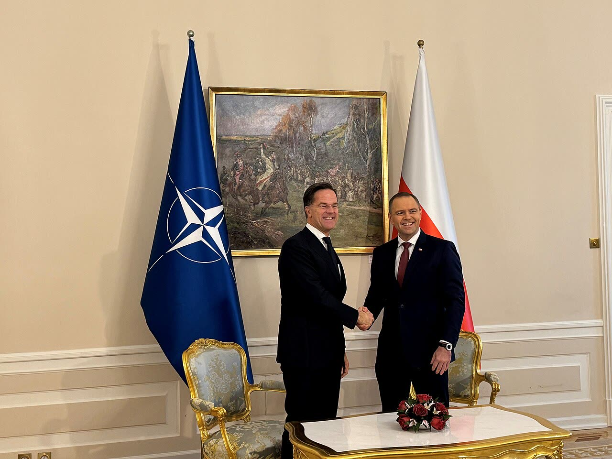

Polonia, la polizia non riceve l'atto che reintegra il presidente della Corte costituzionale
A nostro avviso due corti che si smentiscono lasciano l'ultima parola a chi tiene il cancello: né a destra né a sinistra è una risposta da Stato di diritto.
Redazione Contrappunto · aggiornato il 12.11.2026


In Polonia si litiga dal 2015 su chi debba sedere nel Tribunale costituzionale, la corte che giudica se le leggi rispettano la Costituzione (da noi la Consulta). Quest'anno il Sejm, la Camera bassa, ha eletto otto giudici: il presidente della Repubblica Karol Nawrocki ne ha fatti giurare tre e non ha accettato gli altri cinque, per dubbi sulla procedura di elezione. Il presidente del Tribunale, Bogdan Święczkowski, non li ha ammessi a giudicare. Il 30 ottobre una dei cinque, Anna Korwin-Piotrowska, ha sospeso per un mese Święczkowski e il suo vice, e da allora la polizia presidia l'edificio. Il 10 novembre la Corte suprema, il vertice della giustizia ordinaria, ha annullato la sospensione. Oggi, 12 novembre, Święczkowski si è presentato al cancello con quella decisione; nelle stesse ore è arrivata la risposta del palazzo presidenziale all'invito di Tusk a incontrarsi.
Vedi di più: 7 parole spiegate, cosa si racconta
Cosa si raccontaI fatti della mattinata sono gli stessi in tutte le testate: Święczkowski al cancello con altri tre giudici, la polizia che non prende il documento, Tusk che invita Nawrocki a Sopot e il portavoce presidenziale che dice no. Cambia il nome che ognuna dà alle cose. Niezalezna (destra, vicina al PiS) lo chiama presidente legale e parla di presa con la forza del Tribunale. Rzeczpospolita (centro-destra) e Wirtualna Polska (centro) scrivono che è sospeso, e Wirtualna Polska riporta la replica di Korwin-Piotrowska. TVN24 (centro-sinistra) dà la risposta del palazzo all'invito; OKO.press (centro-sinistra) racconta Tusk che tende la mano. Gazeta Wyborcza (centro-sinistra) non si è potuta leggere. Nessuna testata italiana della raccolta ne ha scritto oggi. [Niezalezna.pl] [Rzeczpospolita] [Wirtualna Polska] [TVN24 (con PAP)] [OKO.press]
- Tribunale costituzionale (TK)
- Trybunał Konstytucyjny: giudica la conformità delle leggi alla Costituzione. Sede in aleja Szucha, a Varsavia. Presidente: Bogdan Święczkowski; vice: Bartłomiej Sochański.
- Corte suprema (SN) e sezione IOZ
- Il Sąd Najwyższy è il vertice della giustizia ordinaria, come la nostra Cassazione. La sua Izba Odpowiedzialności Zawodowej (IOZ), sezione di responsabilità professionale, è guidata da Maria Szczepaniec ed è quella che si occupa dei procedimenti sui giudici (Wirtualna Polska).
- Art. 130
- Articolo della legge sui tribunali ordinari: il presidente di un tribunale può sospendere subito un giudice se la gravità del fatto o il decoro della corte lo richiedono. Korwin-Piotrowska lo ha applicato al Tribunale costituzionale passando per la legge sullo status dei suoi giudici (Demagog). Che valga anche lì è contestato.
- Giuramento davanti al presidente
- La legge vuole che i giudici del Tribunale giurino davanti al presidente della Repubblica. Nawrocki lo ha negato a cinque dei giudici eletti. Per quattro dei cinque l'ha negato per dubbi sulla procedura di elezione; per Maciej Berek perché, secondo il presidente, non ha dimostrato il requisito dei dieci anni come consulente legale (Demagog); per la Commissione di Venezia, nel parere di ottobre 2026 riportato dalla ICJ, il suo è un dovere soprattutto cerimoniale.
- Komornik
- L'ufficiale giudiziario, che esegue le decisioni dei giudici con l'aiuto della polizia, se serve.
- Palazzo presidenziale e Leśkiewicz
- Rafał Leśkiewicz è il portavoce del presidente Nawrocki: parla per il palazzo, cioè per la presidenza della Repubblica.
- Niezalezna, Rzeczpospolita, Wirtualna Polska, TVN24, OKO.press
- Niezalezna: portale di destra vicino al PiS e a TV Republika. Rzeczpospolita: quotidiano conservatore-liberale, critico sia del PiS sia di Tusk. Wirtualna Polska: grande portale di notizie. TVN24: rete all-news privata, liberale. OKO.press: testata d'inchiesta di centro-sinistra.
- Il 12 novembre Bogdan Święczkowski, sospeso il 30 ottobre da Anna Korwin-Piotrowska, si è presentato al cancello del Tribunale costituzionale con il postanowienie (decisione) della Corte suprema del 10 novembre che annulla la sospensione; nessun agente ha ritirato il documento, che è stato fissato al cancello (Rzeczpospolita, Wirtualna Polska).
- Dopo il 10 novembre Korwin-Piotrowska ha risposto che le decisioni della Corte suprema non cambiano nulla e che solo il collegio disciplinare del Tribunale può controllare queste sospensioni (Wirtualna Polska, Rzeczpospolita).
- L'11 novembre Tusk ha invitato Nawrocki a casa sua, a Sopot; il portavoce Rafał Leśkiewicz lo ha definito un gesto politico e ha posto due condizioni: via la polizia dal Tribunale e ingresso dei giudici che hanno diritto di starci (TVN24).
Le testate descrivono la stessa scena e le danno nomi opposti: per Niezalezna (destra) Święczkowski è il presidente legale, per Rzeczpospolita e Wirtualna Polska è il presidente sospeso. TVN24 racconta il rifiuto del palazzo; OKO.press (centro-sinistra) mostra Tusk che tende la mano. Il nodo è che due organi si smentiscono: la Corte suprema ha annullato la sospensione, la giudice che ha sospeso Święczkowski dice che non spettava a lei controllarla. A nostro avviso, in questo vuoto l'ultima parola ce l'ha oggi chi tiene il cancello, e non è una risposta da Stato di diritto. Quindi: chi ha messo i cordoni li ritiri, Nawrocki faccia giurare i cinque, e solo dopo si cena a Sopot. [1] [2] [3] [4] [5]
La verifica punto per punto6 passaggi, 7 fonti
Qui sotto ogni cosa scritta sopra, una per una, con le fonti. Confermato: lo dice un documento originale o più fonti lette. Plausibile: lo riportano fonti serie, ma non abbiamo letto l'originale. Discordante: le fonti danno numeri diversi, e diciamo quali. Ipotesi e Opinione sono il nostro ragionamento, separato dai fatti.
Chi ha deciso cosa, e quando
Il 30 ottobre Anna Korwin-Piotrowska, indicata nelle ordinanze come la giudice con più anzianità, ha sospeso per un mese Święczkowski e il vice Sochański con l'art. 130 della legge sui tribunali ordinari, applicato tramite la legge sullo status dei giudici del Tribunale; tra i motivi, secondo le ordinanze, i cinque eletti tenuti fuori nonostante la richiesta di Strasburgo del 5 maggio, il bilancio 2027 non approvato e le composizioni dei collegi scelte ad arbitrio (Demagog). Święczkowski e Sochański hanno fatto ricorso alla Corte suprema. Il 6 novembre un giudice, Zbigniew Korzeniowski, ha detto che la Corte suprema non era competente e il caso è passato al Tribunale. Il 10 novembre la presidente della sezione IOZ, Maria Szczepaniec, ha accolto il loro reclamo e la Corte suprema ha annullato lo stesso giorno le due ordinanze (Rzeczpospolita, Wirtualna Polska). Per Niezalezna, che riporta il documento mostrato da Święczkowski, la decisione è del 10 novembre, di un collegio di tre giudici, e annulla le due ordinanze del 30 ottobre; il ricorso era dell'avvocato Michał Skwarzyński.
Il 12 novembre al cancello
Święczkowski si è presentato in mattinata con Sochański e i giudici Stanisław Piotrowicz e Jarosław Wyrembak (Niezalezna, Wirtualna Polska). Ha mostrato la decisione, ha chiesto che il comandante dell'operazione la ricevesse e la eseguisse e ha detto agli agenti: «Podejdźcie i odbierzcie kartkę papieru» (venite a prendere un foglio di carta); «Jestem legalnym prezesem Trybunału Konstytucyjnego» (Niezalezna). Ha anche avvertito gli agenti che, se non ritirano il documento, commettono reati gravi: accusa sua, non un atto giudiziario (Niezalezna). Nessun agente ha ritirato il documento, che è stato fissato al cancello; ha detto che probabilmente servirà un ufficiale giudiziario (Wirtualna Polska) per svuotare l'edificio (Rzeczpospolita). Nessuna delle testate dice che sia entrato.
L'invito di Tusk e la risposta del palazzo
L'11 novembre, a Szczecin, Tusk ha detto a Nawrocki: «Podzielmy się opłatkiem przed Wigilią, porozmawiajmy» (dividiamo l'oplatek, il pane azzimo natalizio, prima della vigilia, parliamoci), invitandolo con moglie e figli a Sopot (TVN24, OKO.press). Quasi nello stesso momento, a Varsavia, Nawrocki ha auspicato un Tribunale «Wolny od kordonów policji, ale też wolny od polityków» (libero dai cordoni di polizia, ma anche dai politici) (OKO.press). Il 12 novembre Leśkiewicz ha risposto con «To cwany ruch premiera» (una mossa furba del premier), un gesto senza sincerità, e che «Nie siada się do jednego stołu z człowiekiem, który złamał konstytucję» (non ci si siede allo stesso tavolo con chi ha violato la Costituzione); ha aggiunto che un colloquio ci dovrebbe essere, ma dopo due condizioni: ritirare la polizia dal Tribunale e far entrare i giudici che ne hanno diritto (TVN24, su PAP).
Chi può annullare la sospensione
Święczkowski dice che la decisione della Corte suprema è definitiva (prawomocne) e che quindi lui è il presidente legale (Niezalezna). Per Korwin-Piotrowska le decisioni della Corte suprema non incidono sulla sospensione, perché solo il collegio disciplinare del Tribunale può controllare queste sospensioni (Wirtualna Polska, Rzeczpospolita). Anche sulla base legale il dibattito è aperto: per il costituzionalista Marcin Matczak l'art. 130 non si applica ai giudici del Tribunale, per il giudice della Corte suprema Włodzimierz Wróbel invece sì (Demagog); la Fondazione Helsinki per i diritti umani non vede una base chiara perché a sospendere sia il giudice più anziano, che sostituisce il presidente solo se il posto è vacante (Demagog). Sul metodo, la ICJ ha scritto il 3 novembre che sospendere i due senza una procedura equa e con l'intervento della polizia «contravenes international standards on the independence of the judiciary» e che «The police must not be used» per dare effetto a misure sulla guida del Tribunale; ma ha detto anche che il rifiuto del giuramento «violates international standards» (ICJ).
Tra le righe
Chi tiene la polizia oggi decide chi entra: finché il cordone resta, la decisione della Corte suprema non si esegue e non si può dire che sia stata disapplicata dal Tribunale.
Ragionamento: La decisione della Corte suprema, per essere eseguita, passa dalla polizia: Święczkowski dice che chiamerà un ufficiale giudiziario con la polizia (Rzeczpospolita) e il palazzo chiede il ritiro degli agenti come condizione per incontrare Tusk (TVN24). Che il cordone dipenda dal governo lo desumiamo da questa richiesta, non da un atto che abbiamo letto: per questo la fiducia è media.
Il nostro punto
Tusk ha ragioni serie: il Tribunale non può restare con i cinque eletti fuori e il bilancio bloccato, e Strasburgo ha chiesto il 5 maggio di non ostacolarli. Nawrocki ha ragioni serie anch'esse: una sospensione di dubbia base legale, eseguita con la polizia, che anche la ICJ giudica contraria agli standard internazionali. Quando due corti si contraddicono e nessuna è accettata dall'altro campo, a nostro avviso non basta un invito a cena e non basta un cordone di polizia: serve che il presidente faccia giurare i cinque, che chi ha disposto la sospensione la ritiri, che la polizia lasci il presidio, e che le controversie sulle sospensioni le decida una sola sede riconosciuta da entrambi, anche se per questo servono mesi.
Fonti7, tutte con il link
- Święczkowski stanął przed policjantami z postanowieniem SN (12 novembre 2026, archivio d9251517fb246) (Niezalezna.pl) · consultata il 12.11.2026
- Bogdan Święczkowski chce wejść do TK. Pojawił się przed siedzibą organu (12 novembre 2026, archivio dc01602113652; pagina a pagamento, testo visibile) (Rzeczpospolita) · consultata il 12.11.2026
- Święczkowski znowu pod TK. Pokazał kluczowy dokument (12 novembre 2026, archivio df6def52e538e) (Wirtualna Polska) · consultata il 12.11.2026
- «Nie siada się do stołu z człowiekiem, który złamał konstytucję». Rzecznik prezydenta odpowiada Donaldowi Tuskowi (12 novembre 2026, archivio ddb78b89b136f) (TVN24 (con PAP)) · consultata il 12.11.2026
- Tusk zaprasza Nawrockiego do domu w Sopocie. «Podzielmy się opłatkiem» (11 novembre 2026, archivio d18e360636af4) (OKO.press) · consultata il 12.11.2026
- Kryzys w Trybunale Konstytucyjnym. O co chodzi w sporze o kierownictwo? (4 novembre 2026, archivio d6f852e34a3b7) (Demagog.org.pl) · consultata il 12.11.2026
- Poland: The Constitutional Tribunal crisis must be resolved by law, not by force (3 novembre 2026, archivio dd21991452aff) (Commissione internazionale dei giuristi (ICJ)) · consultata il 12.11.2026
Testo preparato con strumenti di intelligenza artificiale e pubblicato senza revisione umana. Come lavoriamo